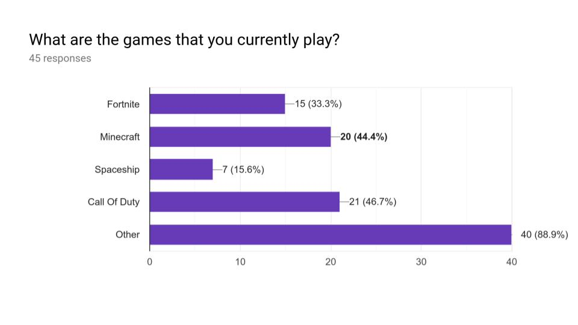
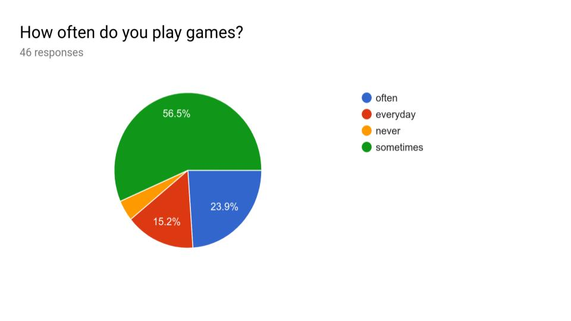
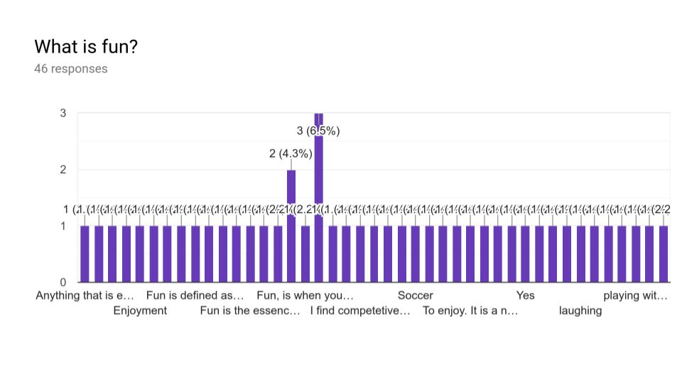

This webpage was created by two students from liverpool boys high school, there names are Pranava and Hasanain. The point of this webpage is to play a game that is fun but also not addictive. Addiction is a physical or psychological need to do, take or use something, to the point where it could be harmful to you.Playing game that are addictive like (Fortnite , minecarft etc) are really bad for your health, since your brain is foused on the game and not anything else.
Before creating this webpage me and my friend made a survey about "Are Game Fun". This survey was for us to know how many people like spaceship games, fortnite and many other. This survey was also to know what others think about having fun while playing and what they think fun is.   
This webpage includes two games, information and video. one of the games are space invaders. This game is about a huge group of spaceships attacking one spaceship. The point of the game is to destroy all the spaceships. There are also many customization that you can do by downloading atom and the code. The link to the code is https://github.com/pranava-challa/space-invaders.git